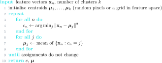
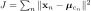

Algorithm

Objective

: each step does not increase it, so the algorithm converges, to a local minimum. ISODATA adds splitting of elongated clusters and merging of close ones, so adapts.
adapts.
Example
from sklearn.cluster import KMeans
km = KMeans(n_clusters=8, n_init=10, random_state=0).fit(F)
cluster_map = km.labels_.reshape(rows, cols)Intuition
Let the data say which groups exist; then a human decides what each group is on the ground.
Pitfall
Clusters are spectral, not semantic: one class may split into several clusters and several classes may share one. Results depend on , initialisation and feature scaling.